Pràctiques
IMPORTANT
Aquestes pràctiques no són obligatòries, però sí recomanables per a poder realitzar els entregables (Aules).
Per començar a fer aquestes pràctiques, es imprescindible haver completat les de la unitat 2.
Pràctica 1 - Disseny mínim amb VPC + Subnet + IGW
🎯 Objectiu: En aquesta pràctica inicial, farem un disseny mínim:
-
Subxarxa pública: per a màquines que necessiten accés públic (servidors web, bastió). Un bastió és una porta d'entrada colocada en la subxarxa pública que permet connectar-se a una subxarxa privada. D'aquesta forma, quan un administrador vol entrar a, per exemple, un servidor d'aplicació o base de dades, primer es conecta al bastió i des d'allí ja es connectar a les màquines internet. Així sols obrim ports en una màquina i és més senzill monitoritzar.
-
Subxarxa privada: per a màquines que no han d’estar exposades (servidors d’aplicació, bases de dades).

1. Creació de la VPC
- A la consola d'AWS Academy, anirem a VPC->Your VPC->Create VPC
-
Omplim els camps:
-
VPC name: Li indiquem el nom que volem posar-li a la VPC.
-
IPv4 CIDR block: Li indiquem quines són les direccions de xarxa de les que disposarà.
-
-
Crear la VPC.
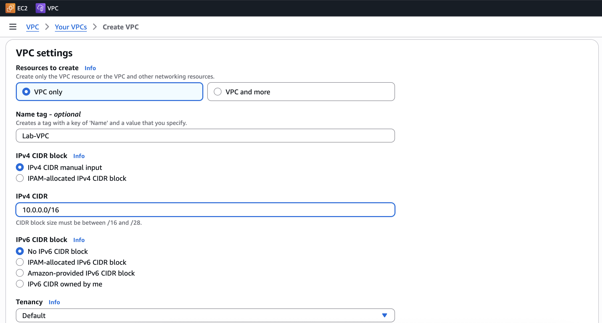
2. Creació de les subxarxes
- A la consola d'AWS Academy, anirem a VPC->Subnets->Create Subnet
-
Crearem primer la subxarxa pública. Omplim els camps:
-
VPC ID: Li indiquem dins de quina xarxa volem tindre la subxarxa. En el nostre cas serà la que hem creat abans.
-
Subnet name: Nom per a la subxarxa
-
AZ: Triarem la AZ. Podem deixar que AWS ho faja per nosaltres (recomanat)
-
IPv4 CIDR block. Indicarem quin bloc d'adreces de la xarxa ens quedarem per aquesta subxarxa. En el nostre cas, gastarem la 10.0.1.0/24 per a la pública i la 10.0.2.0/24 per a la privada.
-
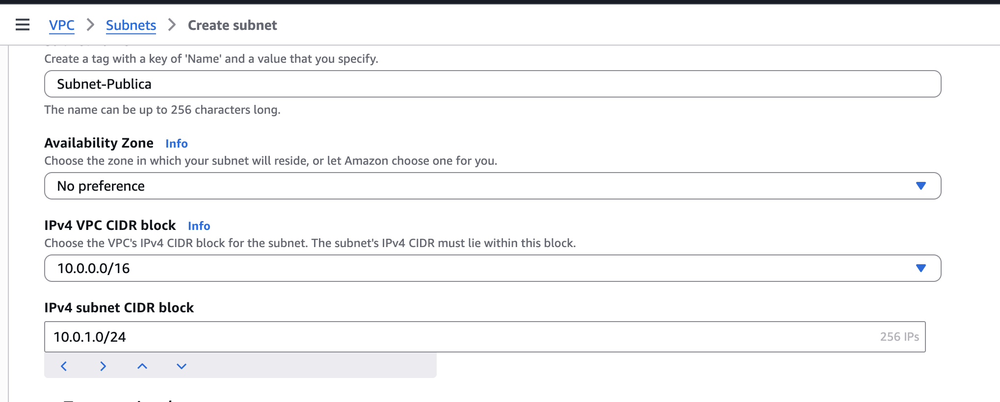
3.Crearem ara la subxarxa privada.
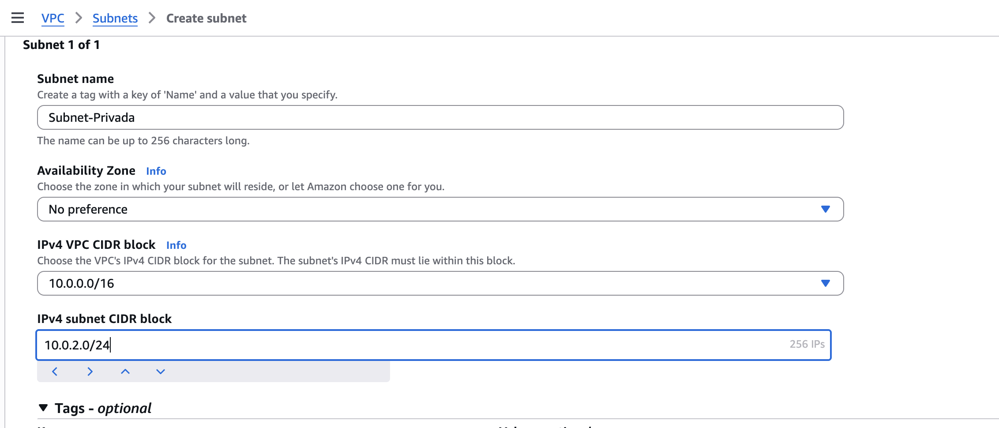
4.Ja tenim la subxarxa privada i la subxarxa pública creades i disponibles per a utilitzar
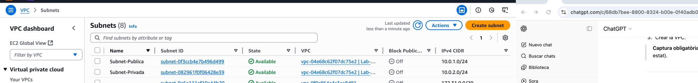
Connexió de la VPC
Si en aquest punt crearem una instància dins la VPC, aquesta no seria accesible publicament perquè la VPC no té accés al món exterior per defecte, necessite l'IGW.
3. Crear i associar l'Internet Gateway
- VPC-> Internet Gateways -> Create Internet Gateway
- Li direm Lab-IGW, per exemple.
- Una vegada creat, selecciona'l i fes clic en Actions->Attach to VPC per associar-lo a la nostra VPC. Selecciona la VPC que hem creat al pas 1.
- Comprova que el IGW apareix associat al VPC correctament.
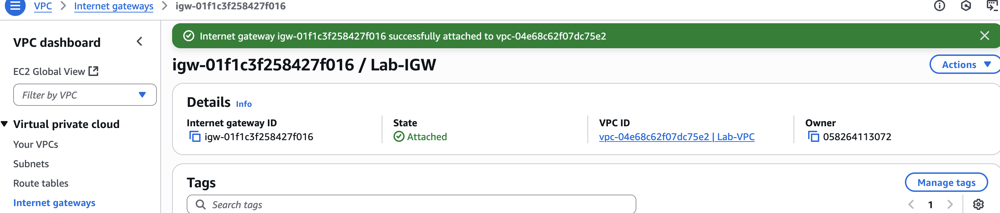
Connexió de la VPC
Ara que ja tenim l'IGW associat a la VPC, si provem a connectar des de fora seguirà sense deixar-nos. Falta configurar la taula de rutes per a indicar-li a la subxarxa com ha de dirigir el tràfic.
4. Crear la taula de rutes per a la subxarxa pública
- VPC-> Route Tables->Create route table
- Li posem un nom i seleccionem la VPC a la que l'associarem.
- Una vegada creada, la seleccionem i Actions->Edit Routes.
-
Afegirem una ruta cap a Internet (0.0.0.0/0) i li direm que per arrivar allí, tenim que dirigir el tràfic cap al IGW que hem creat en el pas anterior. 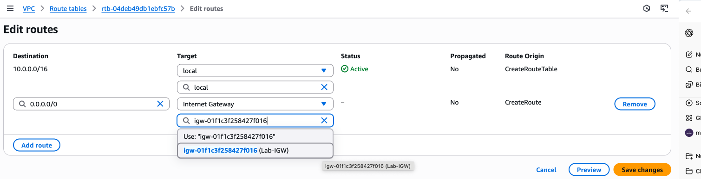
-
Ara cal associar aquesta ruta a la subxarxa pública. Per fer-ho, cal seleccionar la Route Table que acabem de crear i anar a la pestanya Subnet associations i des de Edit Subnet Associations seleccionar la subxarxa pública creada al punt 2. 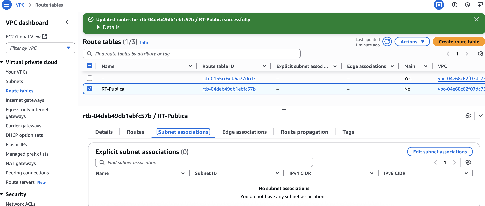
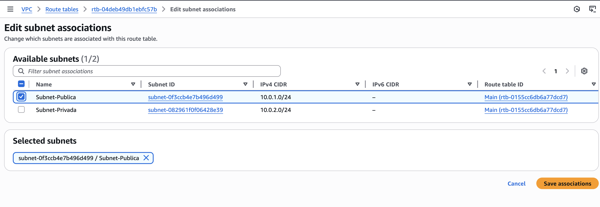
Route table a la subxarxa privada
Totes les subxarxes, per defecte, tenen accés als elements que estan dins de la mateixa VPC. És per això pel que no cal crear una RT a la privada, ja que aquesta no volem que tinga accés a Internet, sino que sols es puga accedir des de la privada.
5. Verificació de la pràctica
1.Comprova que la subxarxa pública té accés a internet. Per fer-ho, pots crear una EC2 i fer un ping cap a l'exterior.
IMPORTANT
És important que durant la creació del EC2, seleccionem la VPC i la subxarxa en la qual volem que estiga l'EC2, sinó ho farà a la VPC per defecte. 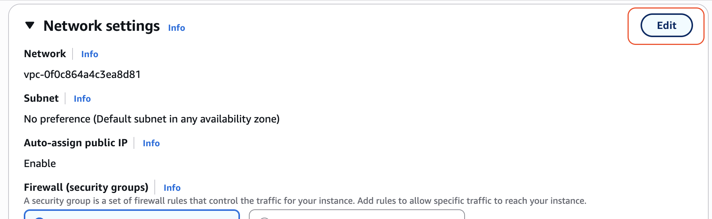
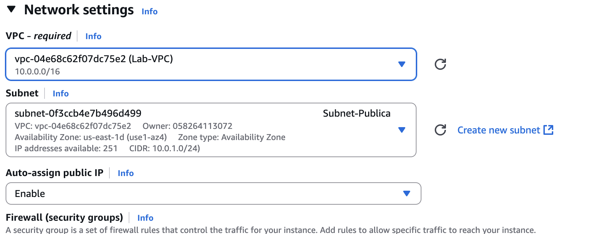
També és important que si és estem a una subxarxa pública (accessible desde fora), li diguem que ens autoassigne una ip pública.
2.Comprova que la subxarxa privada no té accés a internet.
3.Comprova que entre la subxarxa pública i la privada tenen connexió. Recorda que per fer-ho, cal utilitzar les IP's privades ja que ambdues màquines estan dins de la mateixa VPC.
4.Prova a connectar des de el bastió al EC2 de la subxarxa privada per SSH. Si cal, dona-li permisos de SG per poder fer-ho.
No borrar aquesta pràctica
La pràctica 2 partix de la pràctica 1 per tant s'aconsella no resetejar el laboratori encara.
Pràctica 2 - Ús de NACL's en AWS
En aquesta pràctica treballarem amb Network ACLs (NACLs), un mecanisme de seguretat a nivell de subxarxa dins d’una VPC.
Encara que ja has vist com protegir instàncies concretes amb Security Groups (SG), aquests s’apliquen únicament als punts finals (instàncies). Ara, amb els NACLs, aplicarem una segona capa de seguretat que controla el tràfic per a totes les instàncies d’una subxarxa, independentment del seu SG.
Partim de la següent configuració:
- VPC Lab-VPC (CIDR 10.0.0.0/16 dues subxarxes).
- Subnet pública: 10.0.1.0/24 amb IGW i una EC2 accessible amb IP pública.
- Subnet privada: 10.0.2.0/24 amb una EC2 a la qual es pot accedir via bastion.
- Security Groups predeterminats del laboratori.
Per fer més interessant i didàctic l'exemple, instal·larem un Apache a l'EC2 de la subxarxa privada i autoritzarem el tràfic HTTP (podem fer-ho modificant el SG que ve per defecto o creant un nou.). Açò ja ho hem fet a la unitat anterior per tant anirem directament a la configuració del NACL. En el moment que fem que el servidor (subxarxa privada) tinga accés per HTTP, automàticament es converteix en una subxarxa pública. Com hem dit, es sols per e fer la pràctica menys llarga i més didàctica.
Imagina que la teua empresa rep un avís de seguretat: un rang d’IPs està intentant fer atacs SSH de força bruta contra els teu servidor web (l'Apache).
Els teus servidors estan en una subnet privada i ja té SG ben configurat (SSH només des del bastion, HTTP des de qualsevol lloc).
Problema: Necessitem assegurar que, encara que algú modifique per error un SG en el futur, cap instància de la subnet privada accepte tràfic de l’IP sospitosa (203.0.113.25/32). Això només es pot aconseguir amb un NACL.
1. Crear el NACL
- VPC->Network ACL's->Create NACL
- Li posem nom: NACL-Privada
- Seleccionem la VPC en la que ens trobem
- Associem el NACL a la subxarxa privada
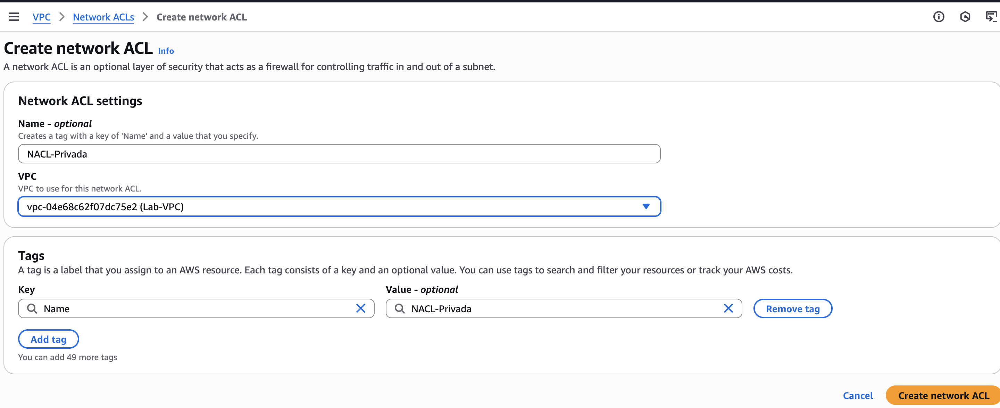
2. Configuració inicial de les regles NACL
Per a que la nostra NACL no interferisca en el funcionament normal del servidor web com feia fins ara, permetrem tràfic d'entrada SSH sols des del bastió i HTTP des de qualsevol lloc i tràfic d'eixida cap a qualsevol lloc tal i com feia el SG.
- Inbound rules -> Edit inbound rules -> Add new rule
- ALLOW TCP/22 des de 10.0.1.0/24
- ALLOW TCP/80 des de 0.0.0.0/0
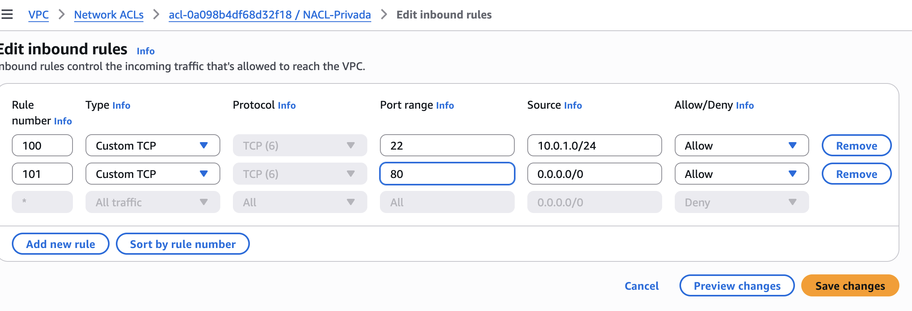
Rule number
Les NACL's, a diferència de les SG, tenen ordre de prioritat. El número que decideix l'ordre de prioritat es el Rule number , sent més prioritari el més xicotet.
2.Outbound rules -> Edit outbound rules -> Add new rule - ALLOW ALL -> 0.0.0.0/0
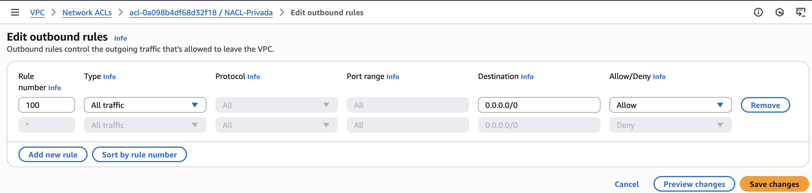
3. Bloqueig de la IP sospitosa
Afegim una nova regla en Inbound:
- DENY All tràfic des de 203.0.113.25/32.
Aquesta regla té prioritat, per tant tenim que assegurar-se que el Rule number siga menor que les anteriors. D'aquesta forma encara que les altres regles diguen ALLOW, si el paquet ve d’aquesta IP es bloqueja.
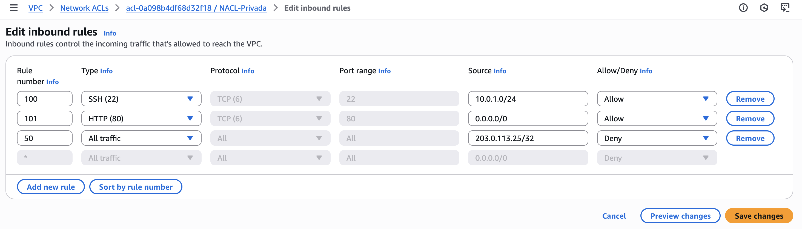
4. Comprovar el funcionament
- SSH desde bastió a privada -> OK, estem dins del rang permés (Revisar punt 4.1)
- Des de qualsevol màquina, HTTP (per exemple, des del navegador) -> OK. El port 80 està permés per a tots.
- Com que no podem simular una IP de forma fàcil, confiarem en que si vinguera una connexió d'aquesta direcció es bloquejaria.
NACL o SG
Els SG són suficients per protegir cas a cas, però no poden fer DENY explícit. El NACL pot actuar com un tallafocs de subnet: encara que algú erròniament obri el SG a 0.0.0.0/0, la subnet té un mur per defecte contra IPs sospitoses.
4.1. SSH intern (EC2-EC2)
A la unitat anterior es va estudiar com connectar per SSH desde un client extern (el nostre terminal del nostre PC, per exemple) a una EC2 que tenim a AWS però, i si una vegada connectats a aquesta màquina volem fer SSH a altra màquina que està dins de la VPC, com és el cas d'un bastió?
Donat que, si ho hem fet bé, totes les instàncies comparteixen les mateixes claus, no es massa complicat. Cal seguir aquests pasos tant en sistemes Linux com Mac. Per a Windows es pot seguir el següent article oficial d'AWS.
Aquest procés aprofita que es gasta la mateixa clau per fer un reenviament d'agent SSH i així evitar que tinga que passar-me la clau .pem a totes les instàncies sino que sols té que estar en la primera a la que ens connectem, en aquest cas, el bastió.
En primer lloc, comprovem que la clau té els permisos adequats (400) i executarem les següents instruccions des de terminal:
-
Executem ssh-agent
eval $(ssh-agent) -
Carreguem en memòria la clau privada de la instància
ssh-add labsuser.pem -
Revisem que la clau s'ha afegit correctament
ssh-add -l -
Ara ja sols ens queda connectar amb l'EC2 de la subxarxa pública. Amb l'opció -A, les claus es mantenen en memòria i no es necessari utilitzar el -i indicant-li el fitxer .pem
ssh -A ec2-user@direccióIpPublica -
Una vegada connectats a la instància pública, des d'ella, podrem connectarnos a la instància de la subxarxa privada utilitzant la seua direcció IP privada
ssh -A ec2-user@direccióIpPrivada
Pràctica 3 (opcional) - Servidor Web Apache + PHP + MySQL
Sobre una VPC nova, crea dos subxarxes públiques i una privada, cadascuna amb una EC2 amb Ubuntu dins.
- Una subxarxa pública serà utilitzada com a bastió i permetrà les connexions SSH de tots.
- L'altra subxarxa pública serà per el servidor web i permetrà les connexions HTTP de tots i el SSH sols des del bastió. Aquest servidor web tindrà instal·lat un Apache+PHP.
- La subxarxa privada tindrà el servidor de base de dades amb un mysql al qual sols es podrà accedir desde el servidor web al port de la BBDD (3306).
Pots trobar a l'apartat d'instruccions d'interés un pas a pas sobre com instal·lar Apache+PHP, com instal·lar el servidor de base de dades MySQL, com connectar ambdues instàncies i com fer-ho des de PHP.
Si ho aconseguixes, tindràs una infraestructura web protegida simple, dinàmica, protegida i resilient.
Vídeo a Aules
Tens un vídeo a Aules amb un pas a pas de la pràctica.
Pràctica 4 - Funció Lambda
En aquesta pràctica crearem una funció Lambda molt simple, la invocarem manualment des del consola (test) i consultarem els logs per comprendre el cicle de vida d’una invocació.
1. Crear la funció
- Lambda->Create function
- Function Name: Li posem un nom a la funció. hello_world_lab (per exemple)
- Runtime: Elegim el llenguatge en el que volem programar la funció. Gastarem Node.js (per exemple)
- Execution Role: Triarem un dels existents del laboratori.
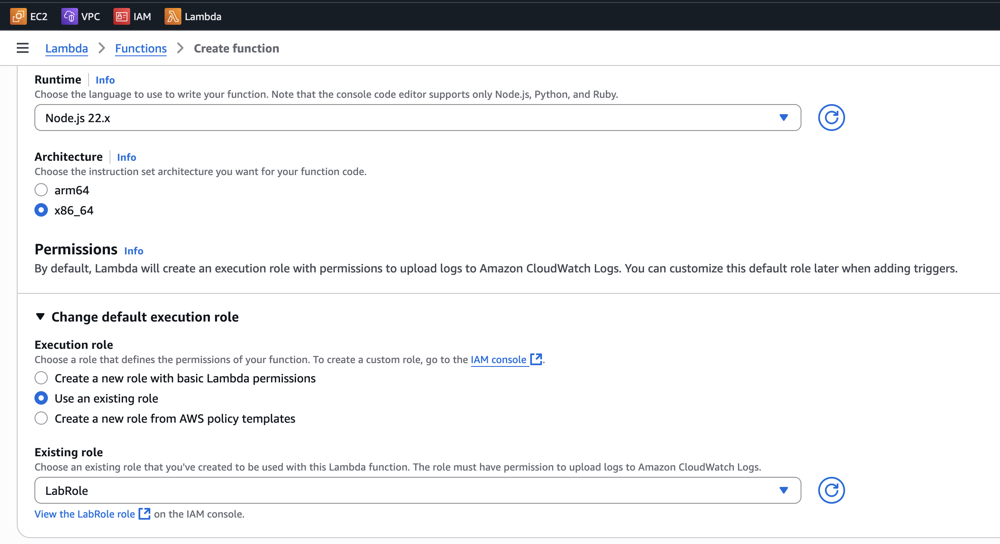
2. Codi de la funció
- Des de la pestanya de Code, escriurem el codi associat a la nostra funció. Podem copiar i pegar el següent fragment.
export const handler = async (event) => {
console.log("Lambda invocada amb l'event:", JSON.stringify(event));
return {
statusCode: 200,
body: "Hola des de Lambda! Funció 'hello_world_lab' executada correctament."
};
};
Aquest codi el que fa es quan rep un event, escriu al log el missatge "Lambda invocada..." i torna al client que l'ha cridat un JSON amb codi 200 i com a com un missatge per dir-li que s'ha executat correctament.
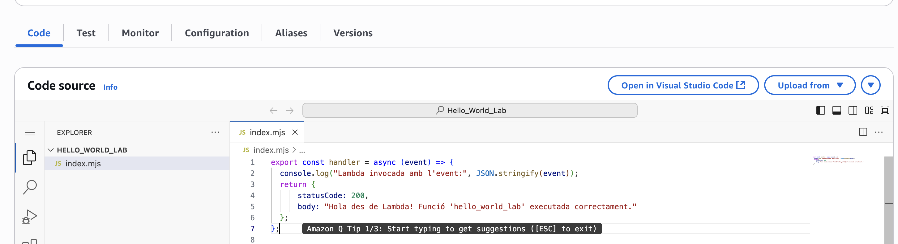
Per a desplegar la funció, li donarem al botó Deploy
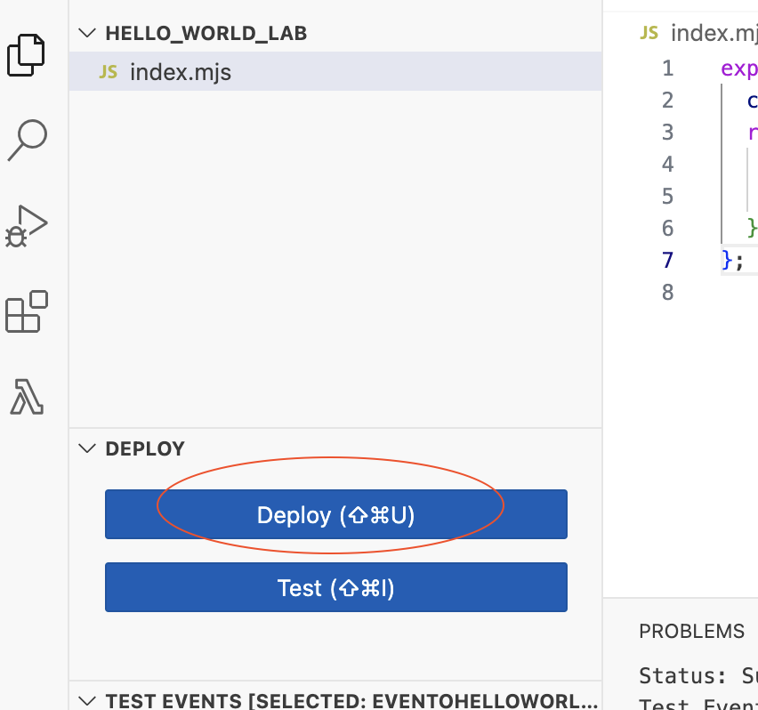
3. Test de la funció
Des de la pestanya Test, crearem un nou event. Este event simularia el que llançaria la funció i podem (si volem), passar-li paràmetres en format JSON.
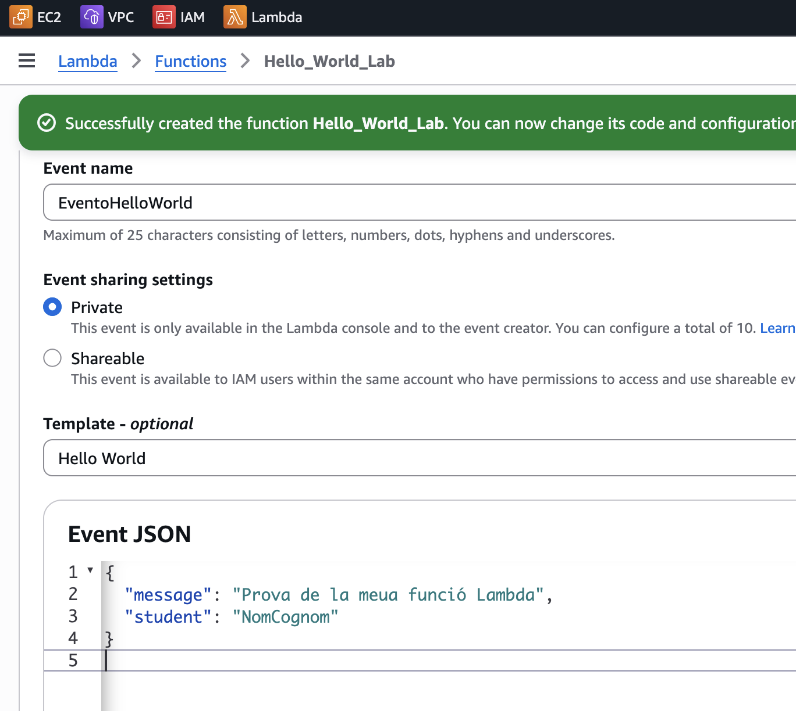
I una vegada tot configurat, li donem al botó Test i si tot ha anat bé, ens mostrarà el següent missatge (o similar):
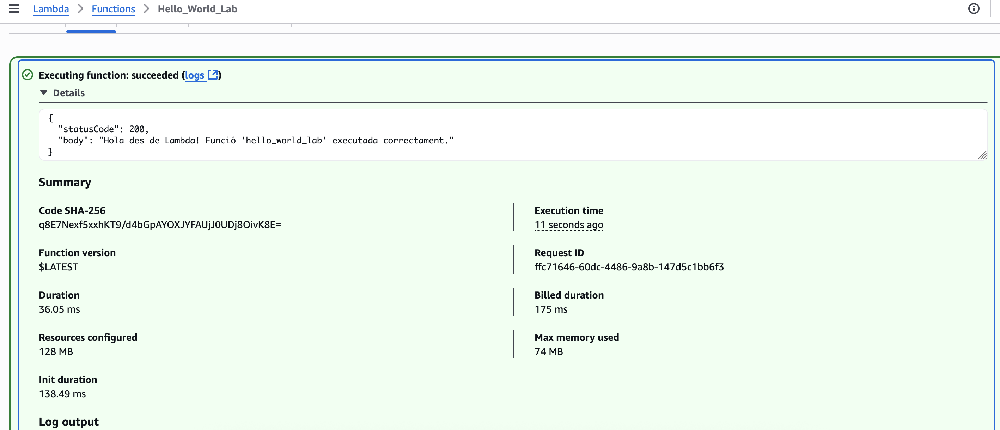
On podem comprovar que ens està tornant en el que havíem programat a la nostra funció.
4. Revisió dels logs
Els logs són sempre molt importants per entendre el cicle de vida i els possibles errors que ens dona un servei o aplicació. En aquest cas, al mateix missatge d'èxit, també ens apareix els logs que s'han generat i podem revisar que el que haviem escrit al console.log apareix al log del sistema junt a altra informació important.
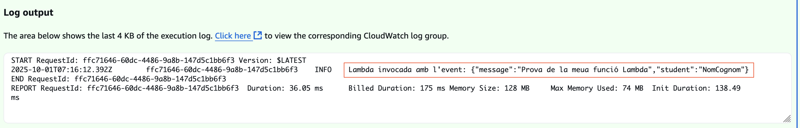
Lambda escriu tots els logs a CloudWatch, servei de monitorització que s'estudiarà a la unitat 6. Per revisar-ho podem accedir al servei i obrir Log Groups.
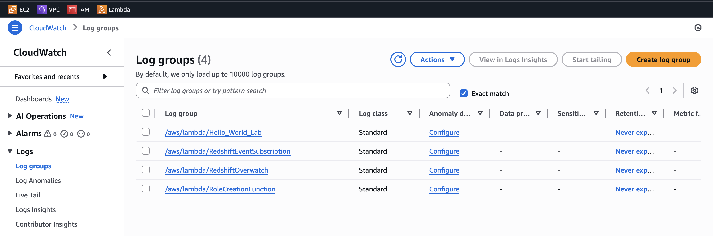
Podem observar con un d'ells és el del Lamba que acabe de crear. Si accedisc a ell i consulte l'últim Log Stream disponible, trobaré el log generats per aquest servei en la seua última execució, es a dir, la que hem realitzat nosaltres.
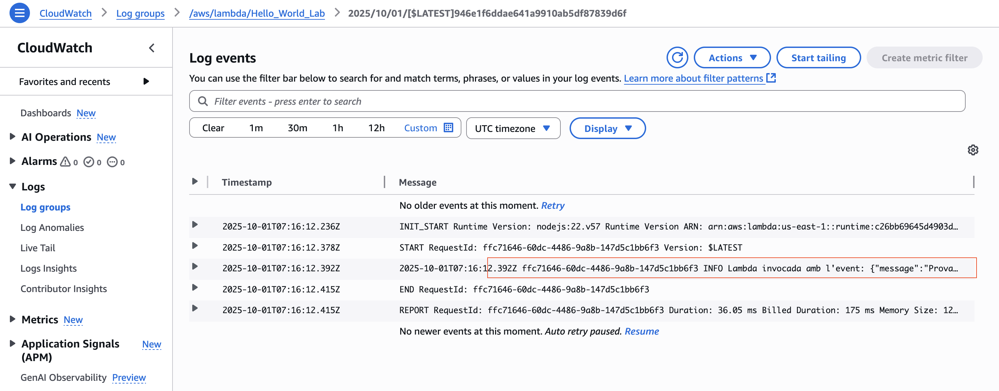